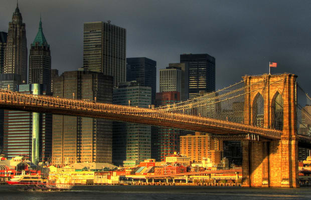
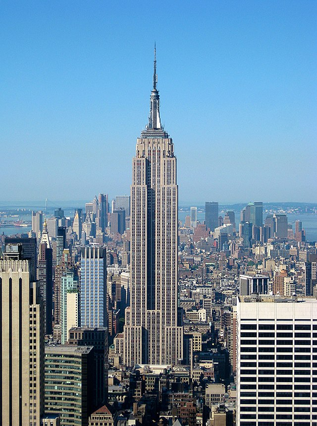

Miejsca do odwiedzenia
Brooklyn Bridge
Jeden z najstarszych mostów wiszących na świecie o długości 1834 m, szerokości 26 m i wysokości 84 m. Łączy nowojorskie dzielnice Brooklyn i Manhattan, które oddziela od siebie East River. W chwili zakończenia budowy w 1883 r. był jednym z największych stalowych mostów wiszących na świecie.
Czytaj więcejTimes Square

Plac w dzielnicy Midtown w okręgu Manhattan w Nowym Jorku znajdujący się na skrzyżowaniu Broadwayu i alei Siódmej, rozciągający się od ulicy 42 do ulicy 47. Jest to jedna z ikon Nowego Jorku. Słynie z wielkiej liczby wyświetlanych reklam.
Czytaj więcejCentral Park

Park miejski w Nowym Jorku będący oazą zieleni. Położony w centrum Manhattanu, między 110. ulicą (Central Park North) na północy i 59. ulicą (Central Park South) na południu oraz Ósmą Aleją (Central Park West) na zachodzie i Piątą Aleją na wschodzie. Zajmuje 843 akry powierzchni (341 hektarów) będąc prostokątem o szerokości 850 m (w kierunku wschód-zachód) i długości 4120 metrów (północ-południe).
Czytaj więcejEmpire State Building
Wieżowiec w Nowym Jorku w Stanach Zjednoczonych, jeden z najbardziej rozpoznawalnych symboli nie tylko miasta, ale także całego kraju. Jego nazwa pochodzi od przydomku stanu Nowy Jork, który brzmi właśnie Empire State.
Czytaj więcej